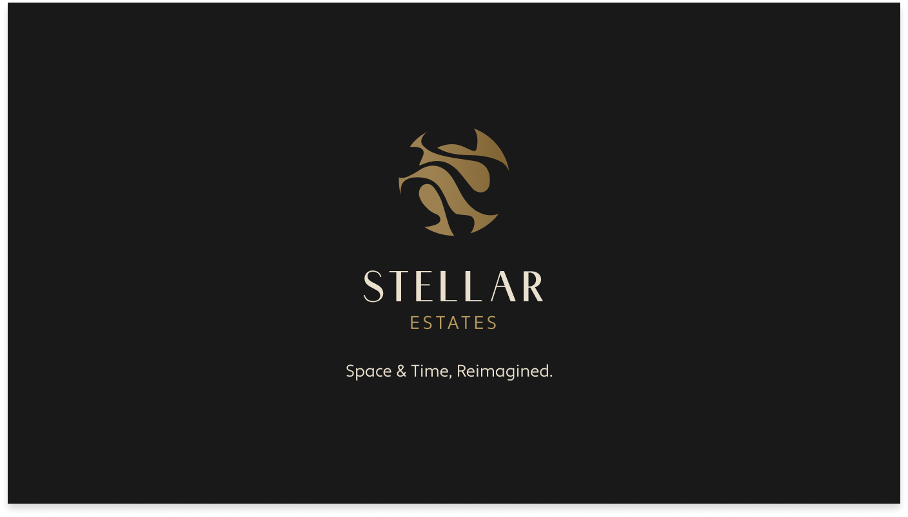
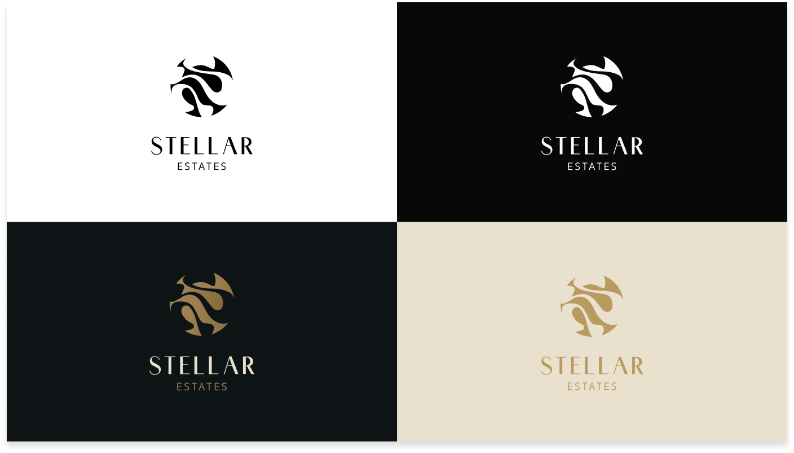
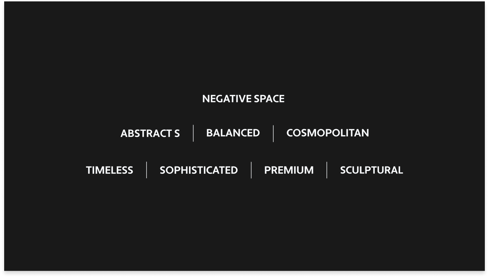
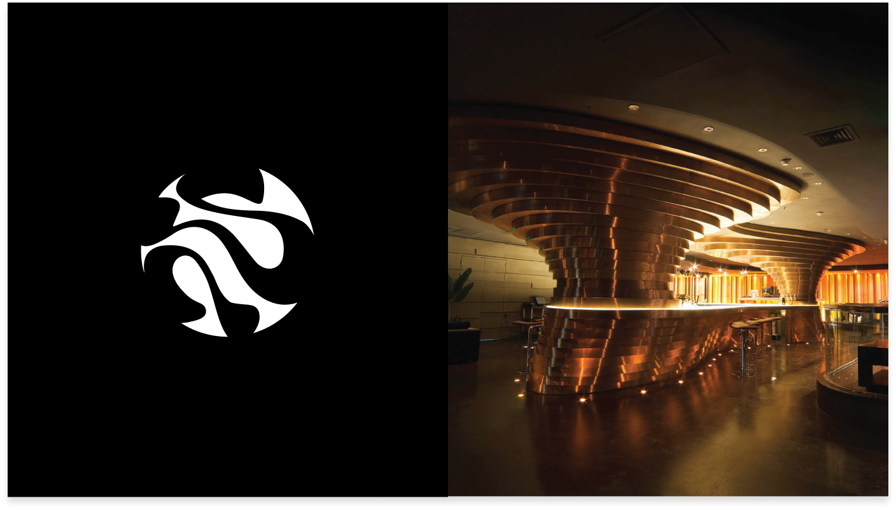
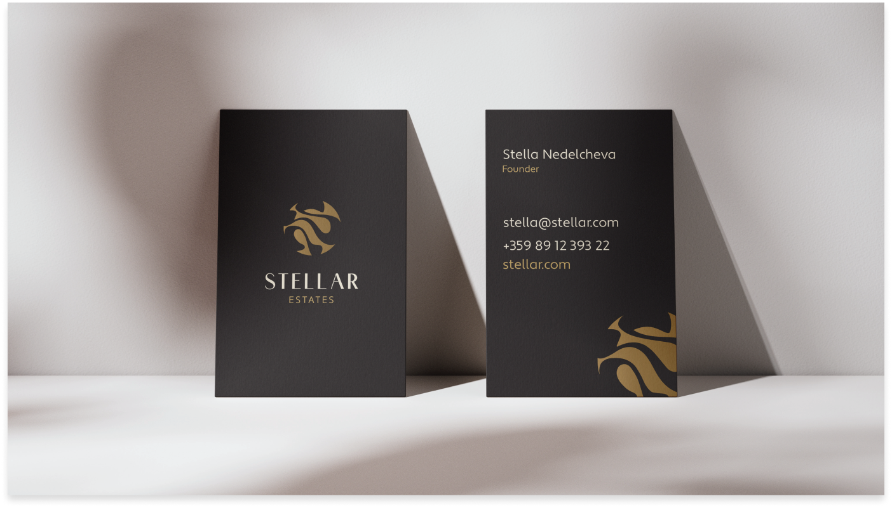
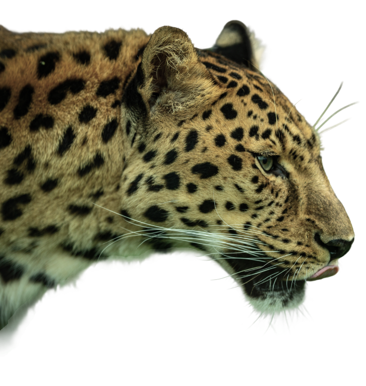
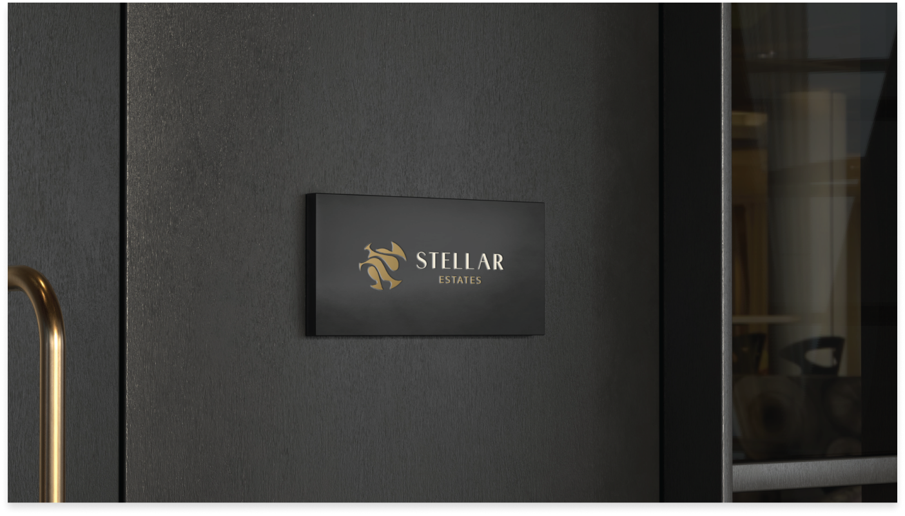
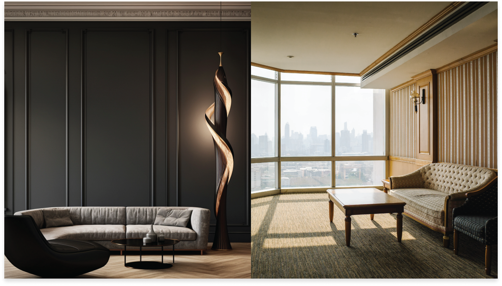
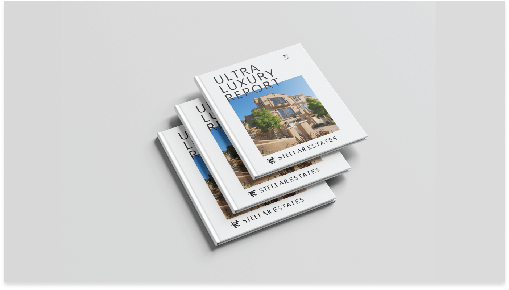

Stellar is about redefining the horizons of luxury and the precision of high-stakes investment. It is where architectural brilliance meets global opportunity—a reminder that where you live and where you invest should be as limitless as the stars themselves. Rooted in a vision of timeless elegance and cosmopolitan reach, the brand bridges the heritage of Bulgaria with the sky-high ambitions of world-class hubs like Dubai. Stellar isn't just about acquiring property; it's about curating a legacy of space and time, empowering the modern visionary to conquer the global market and secure their place in the extraordinary.


The luxury real estate market is saturated with traditional imagery of "opulence." For a Bulgarian-based firm serving global investors in hyper-competitive markets like Dubai, the primary challenge was to transcend local boundaries and establish a brand identity that speaks the universal language of ultra-high-net-worth (UHNW) investing. The brand needed to move away from literal "home" icons and instead embody the concepts of capital appreciation, architectural permanence, and global mobility. The visual identity had to feel at home in a Sofia penthouse, a Dubai Marina skyscraper, or a London executive suite.


We developed a sophisticated brand ecosystem centered around a sculptural, abstract "S" mark that utilizes negative space to suggest balance and permanence. This identity was extended into the Ultra Luxury Report (ULR), a proprietary publication that positions Stellar as a data-driven thought leader rather than just a brokerage. By combining a "Cosmopolitan" aesthetic with "Premium" execution, we provided the founder with a toolkit that commands respect in any boardroom, from Sofia to Dubai.



Stellar Estates stands as a testament to the fact that luxury is a universal language. It is a brand designed for those who don't just seek a home, but a strategic asset—a sanctuary that reflects their status and fuels their future. In every detail, from the business card to the digital presence, Stellar reflects a world where luxury is reimagined and excellence is the only standard.


RETURN